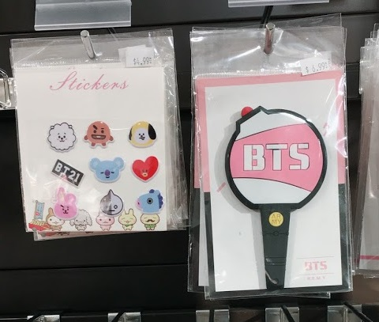
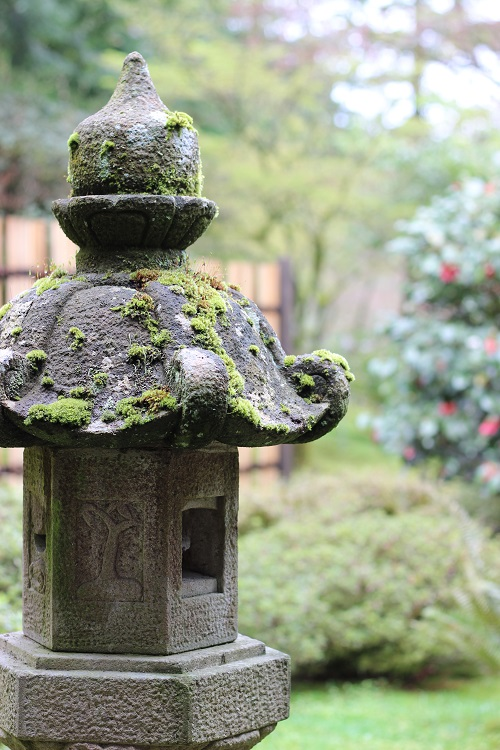
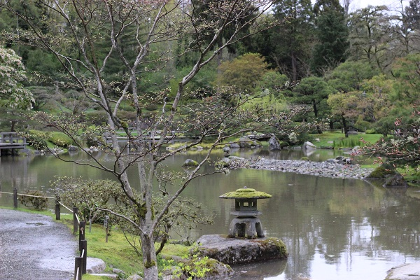
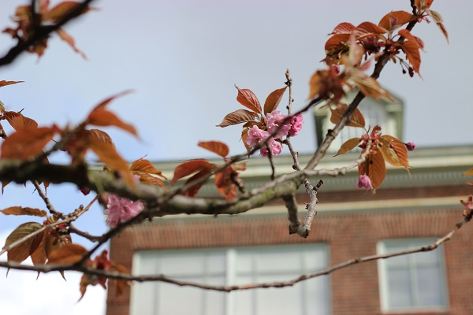
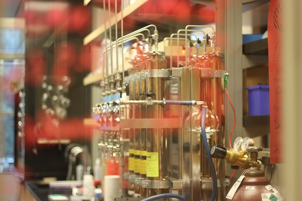

After two years and ten months, my last day at Zynga was April 13th.
Before starting my new job at Google I decided to take a super short weekend trip to Seattle to visit my younger sister who is doing her PhD at University of Washington.
It was super rainy, but still lots of fun. The highlights were H-Mart, the Link Light Rail transportation system, the Duke Ellington Orchestra at the Seattle Symphony, the Japanese Baptist Church, the Seattle Japanese Garden, and the UDub campus.
Table of Contents
Thoughts about the Link Light Rail
Duke Ellington Orchestra at the Seattle Symphony
H-Mart
So I went to Seoul a few weeks before this trip and I had mentioned that we went to a LINE store where lots of BT21 merchandise showcased, but they were all sold out.
So I was surprised to find that at local Korean supermarket, H-Mart, BT21 goods were in stock.
The store was basically a treasure cove of Korean groceries on the first floor, and a bunch of home goods, some Korean cosmetics and K-pop merchandise on the second floor.
In addition to some BT21 stickers, I purchased buldak bokkeum myun, or Fire Chicken Noodles to try with my little sister. We tried it Sunday morning, and she gave up since she had to sing in the choir later that morning at church.

Thoughts about the Link Light Rail
During my time in Seattle, we utilized the Link Light Rail heavily. I’ve been always a public transit fan, regularly commuting with Caltrain now, after commuting for a year and a half on BART.
Link Light Rail was a different. I didn’t know much about trains and types of rails before this, but from my understanding, light rails are different from heavy rails in that: 1. Light rails are smaller and slower than heavy rail (subways) 2. Heavy rails get power from electrified rail from below the train, whereas light rails get electrified from overhead system (lighter) 3. Light rails can operate along crowded city streets with frequent stops with quick acceleration & deceleration
My impression of the Link Light Rail was that it was super smooth, similar to the SFO AirTrain, and very quiet. I look forward to boarding it again.
Duke Ellington Orchestra at the Seattle Symphony
My origins as a Jazz musician started with High School jazz band where we played a lot of Duke Ellington big band repertoire, so this concert was especially a great opportunity for me.
The band leader was very knowledgeable about the history of the works and the set list was a mix of the crowd-pleasing classics as well as more of his unknown pieces, with strong historical value.
Supposedly, this was the second time that “The Queen’s Suite” was performed fully live (first time was the night before, in Seattle). I was touched by the pianist’s interpretation and performance of “The Single Petal of a Rose”, and the bassist’s accompaniment.
I wholeheartedly enjoyed all of the familiar tunes that I had soaked into my self during years of jazz practice, including “Satin Doll”, “Don’t get around much anymore”, “Take the ‘A’ Train”, “Sophisticated Lady”, “Prelude to a Kiss”, and probably some more that I missed here. Featuring almost every member of the orchestra as a soloist one time or another (except for probably the 1st and 3rd trombonist?), I could tell that this was an extremely creative and skilled set of musicians. The 2nd tenor especially had a rich tone and I could tell was the fan favorite.
My favorite tune was probably “Apes & Peacocks” from the Queen’s Suite. I love complex jazz that incorporates interesting textures rhythmically and melodically. I recommend everyone to take a listen.
My sister’s favorite was “Mood Indigo” which requires perfect balance between the trumpet, trombone, and clarinet. As a trombonist, I know it would be super challenging to nail those chords and play quietly. They did it beautifully.
Seattle Japanese Garden
Sunday was the only day that was not raining during my Saturday-Sunday-Monday trip.
After going to church, my sister and I went to the Seattle Japanese Garden. The entry ticket cost $8, so we did our best to make the most use of it. The garden was actually very large with lots to see. Unfortunately, the light was really white on a cloudy day, so the pictures came out sub-par, but here are some:


The flowers were pretty beaten up by the rain, I had better luck near the church to find some blooms.

Closing Thoughts
I had lots of fun visiting my only sibling in Seattle.
Other than the places mentioned on this post, we visited some nice cafes and dessert places, ate at an accidentally fancy restaurant while in a rush (before the concert), and so many great memories.
Visiting my sister at her lab was really interesting. Here’s a shot I got with the blurry red marker on the clear window, and the equipment in focus:

It was nice to see my sister all grown up and taking care of herself.
As for my new job, I’m two weeks in, finally finished orientation, and it’s been a blast so far. There were some unexpected events – I thought I’d be working from the San Bruno office, but I’m actually working in Mountain View full time.
It’s also interesting to reconnect with people from various stages of my life at Google. I’ve also been blessed to work with some awesome ladies for an orientation hackathon. Orientation was a lot of fun, and I’m sure the next few weeks will be also somewhat hectic but great.
I’m hoping to publish another post sometime about interview prep and interviewing while being employed. Until then!